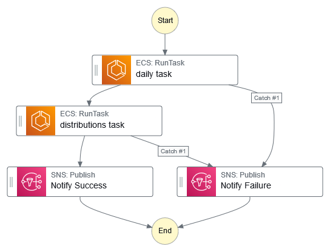

Cloud Platform Solutions Architectures
Hover over an illustration’s symbols for more details; some have links to further details. Images only have captions. With time, more details will be added.
Delivering Assets
Interacting
Elastic Compute Cloud
With a public subnet
A launch template example: redacted.
{
"EbsOptimized": false,
"IamInstanceProfile": {
"Arn": "{amazon.resource.name}"
},
"BlockDeviceMappings": [
{
"DeviceName": "/dev/xvda",
"Ebs": {
"Encrypted": false,
"DeleteOnTermination": true,
"Iops": 3000,
"VolumeSize": 29,
"VolumeType": "gp3",
"Throughput": 125
}
}
],
"NetworkInterfaces": [
{
"AssociatePublicIpAddress": true,
"DeleteOnTermination": true,
"Description": "",
"DeviceIndex": 0,
"Groups": [
"{security.group.identifier}"
],
"InterfaceType": "interface",
"Ipv6Addresses": [],
"SubnetId": "{subnet.identifier}",
"NetworkCardIndex": 0
}
],
"ImageId": "{amazon.machine.image.identifier}",
"InstanceType": "{instance.type.code}",
"KeyName": "{key.pair.name}",
"Monitoring": {
"Enabled": false
},
"Placement": {
"AvailabilityZone": "{availability.zone}",
"GroupName": "",
"Tenancy": "default"
},
"DisableApiTermination": false,
"InstanceInitiatedShutdownBehavior": "terminate",
"TagSpecifications": [
{
"ResourceType": "instance",
"Tags": [
{
"Key": "cost",
"Value": "free tier"
}
]
}
],
"CreditSpecification": {
"CpuCredits": "standard"
},
"CapacityReservationSpecification": {
"CapacityReservationPreference": "open"
},
"HibernationOptions": {
"Configured": false
},
"MetadataOptions": {
"HttpTokens": "required",
"HttpPutResponseHopLimit": 2,
"HttpEndpoint": "enabled",
"HttpProtocolIpv6": "disabled",
"InstanceMetadataTags": "disabled"
},
"EnclaveOptions": {
"Enabled": false
},
"PrivateDnsNameOptions": {
"HostnameType": "ip-name",
"EnableResourceNameDnsARecord": false,
"EnableResourceNameDnsAAAARecord": false
},
"MaintenanceOptions": {
"AutoRecovery": "default"
},
"DisableApiStop": false
}
With a private subnet
Simple Storage Service (S3)
Auto
Via Step Functions
{kind=link}
The underlying infrastructure code of the above; redacted.
{
"Comment": "An example",
"StartAt": "daily task",
"TimeoutSeconds": 3600,
"States": {
"daily task": {
"Type": "Task",
"Resource": "arn:aws:states:::ecs:runTask.sync",
"Parameters": {
"LaunchType": "FARGATE",
"Cluster": "arn:aws:ecs:{region.name}:{identifier}:cluster/{cluster.name}",
"TaskDefinition": "arn:aws:ecs:{region.name}:{identifier}:task-definition/{task.definition}",
"NetworkConfiguration": {
"AwsvpcConfiguration": {
"Subnets": [
"{subnet.identifier}",
"{subnet.identifier}",
"{subnet.identifier}"
],
"SecurityGroups": [
"{security.group.identifier}"
],
"AssignPublicIp": "..."
}
}
},
"Next": "distributions task",
"Catch": [
{
"ErrorEquals": [
"States.ALL"
],
"Next": "Notify Failure",
"Comment": "The daily task"
}
],
"Comment": "The daily task succeeded. Next, the distributions task."
},
"distributions task": {
"Type": "Task",
"Resource": "arn:aws:states:::ecs:runTask.sync",
"Parameters": {
"LaunchType": "FARGATE",
"Cluster": "arn:aws:ecs:{region.name}:{identifier}:cluster/{cluster.name}",
"TaskDefinition": "arn:aws:ecs:{region.name}:{identifier}:task-definition/{task.definition}",
"NetworkConfiguration": {
"AwsvpcConfiguration": {
"Subnets": [
"{subnet.identifier}",
"{subnet.identifier}",
"{subnet.identifier}"
],
"SecurityGroups": [
"{security.group.identifier}"
],
"AssignPublicIp": "..."
}
}
},
"Next": "Notify Success",
"Catch": [
{
"ErrorEquals": [
"States.ALL"
],
"Comment": "The distributions task",
"Next": "Notify Failure"
}
],
"Comment": "The distributions task succeeded."
},
"Notify Success": {
"Type": "Task",
"Resource": "arn:aws:states:::sns:publish",
"Parameters": {
"TopicArn": "arn:aws:sns:{region.name}:{identifier}:{topic}",
"Message.$": "$"
},
"End": true
},
"Notify Failure": {
"Type": "Task",
"Resource": "arn:aws:states:::sns:publish",
"Parameters": {
"TopicArn": "arn:aws:sns:{region.name}:{identifier}:{topic}",
"Message.$": "$"
},
"End": true
}
}
}
Afterwards

Elastic MapReduce (EMR)
A Schema for a Step Functions Elastic MapReduce Solution